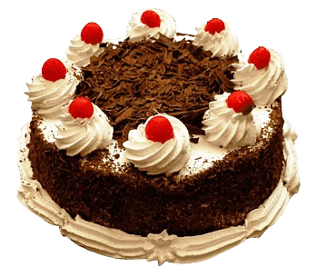
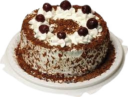
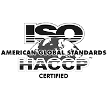
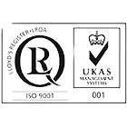
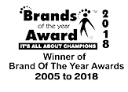
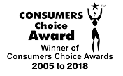

AboutUs
Who We Are
Bakery Palace Sweets & Bakers is one of the pioneers of Pakistans Sweet Mart Industry.
Our Legacy of finest quality products and remarkable services
dates back to 1957.
Bakery palace was established on a very small scale by Muhammad Usman Ghani in the year
2000. But as a product of our untiring efforts, desire for the highest quality,
professional dedication, selection of the finest ingredients, best skilled labor
and innovations in the mode of packing, Bakery Palace progressed remarkably and
blossomed to its present standing of unmatched prestige.
After incorporatingmodern techniques, research, development including food
technologists and hiring qualified nutritionists, Bakery Palace has been able to
improve its quality
manifolds. This is why today Bakkery Palace is not only acknowledged throughout
Pakistan, but its love travels far and beyond; in the hearts of
many Pakistanis around the globe



Our Rewards




What We Bake & Cake
From scrumptious cakes and rich Halwajat to mouthwatering Pakistani Sweets and
Savory Nimkoz, we bake and cake pretty all things delicious. With every product
that we sell, comes the guarantee of not just great taste but also fresh ingredients
and quality service. Although we pride ourselves in our long held legacy, we still
endeavor each day to better our services and define every satisfied client as a
milestone in our journey to the summits of success.
- Fresh From The Oven
- Quality Ingredients
- Great Taste
- Confectionery Masterpiece
- Quick Delivery
- Satisfaction Guaranteed